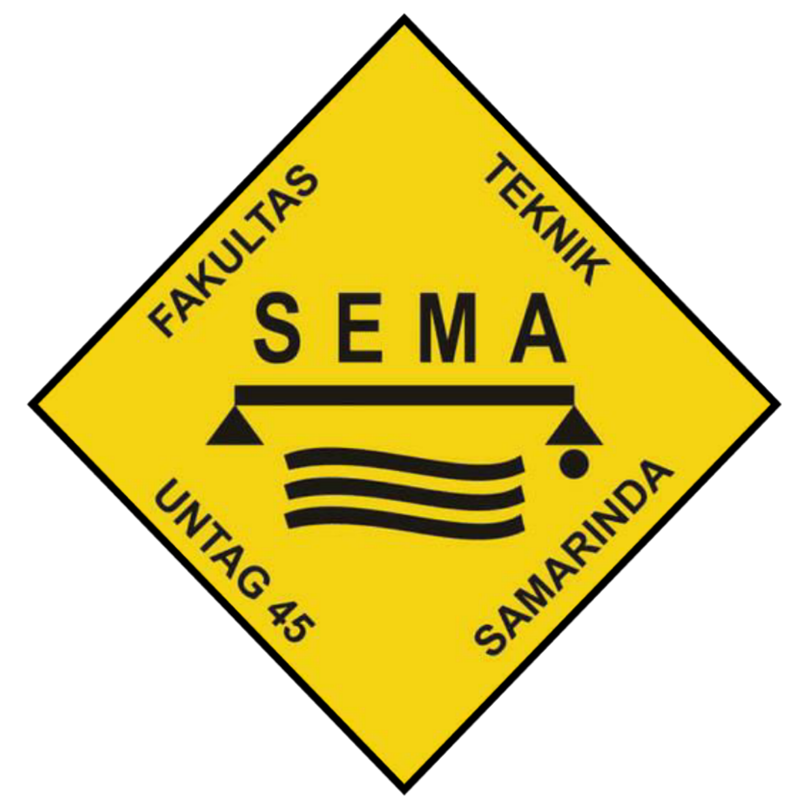

Senat Mahasiswa Fakultas Teknik (SEMA FT)
Senat Mahasiswa Fakultas Teknik (SEMA FT) Universitas 17 Agustus 1945 Samarinda hadir sebagai rumah gerak dan ruang kolaborasi bagi mahasiswa di lingkungan Fakultas Teknik. Berpijak pada semangat keinsinyuran, perencanaan, dan perancangan, SEMA FT menjadi simpul yang menghubungkan dinamika akademik, kegiatan kemahasiswaan, serta kebutuhan nyata mahasiswa lintas program studi.
Melalui perancangan program kerja yang terukur dan terarah, SEMA FT mendorong tumbuhnya budaya berpikir kritis, inovatif, dan solutif terhadap berbagai persoalan di kampus maupun masyarakat. Setiap agenda dirancang untuk melatih ketangguhan manajerial, kerja tim, kepekaan sosial, serta etika profesional agar mahasiswa terbiasa menjawab tantangan secara sistematis dan bertanggung jawab.
Lebih dari sekadar pelaksana kegiatan, SEMA FT juga menjadi ruang bertukar gagasan, penguatan kapasitas diri, dan jejaring antar-mahasiswa sehingga seluruh potensi yang ada di Fakultas Teknik dapat berkembang secara berkelanjutan dan memberi dampak positif bagi lingkungan sekitar.